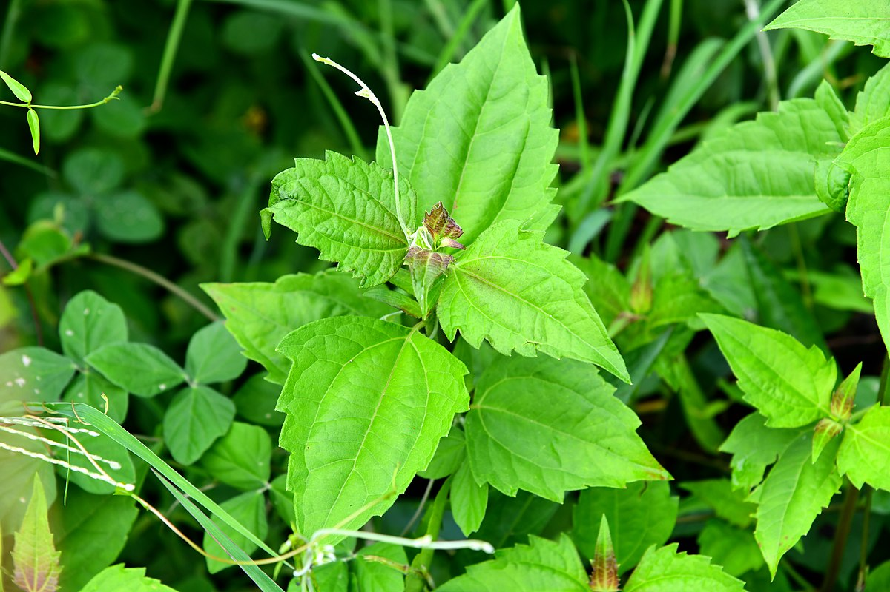

สาบเสือ
สาบเสือ (Chromolaena odorata) ใบสาบเสือ มีการใช้แบบภูมิปัญญาพื้นบ้าน นำใบสดมาล้างให้สะอาด ขยี้หรือโขลกให้ละเอียดแล้วพอกบริเวณแผลสด สำหรับข้อมูลทางวิทยาศาสตร์มีบางงานวิจัยระบุว่าสารสกัดใบสาบเสือมีฤทธิ์ต่อกลไกการห้ามเลือด โดยลดระยะเวลาการแข็งตัวของเลือด (clotting time และ bleeding time) อย่างไรก็ตามแผลสดเป็นแผลที่ติดเชื้อได้ง่าย ดังนั้นเมื่อห้ามเลือดได้ควรทำความสะอาดแผลให้สะอาด

เป็นยาแก้ ปวดท้อง ท้องขึ้น ท้องเฟ้อ แก้บวม ดูดหนอง แล้วนอกจากนี้ ใบสาบเสือ ยังมีฤทธิ์ พิชิตปลวกได้อีกด้วย ใบ มีสารสำคัญ คือ กรดอะนิสิกและฟลาโวนอยด์หลายชนิด เช่น ไอโซซากูรานิติน และโอโดราติน นอกจากนี้ยังมีสารพวกน้ำมันหอมระเหย ซึ่งประกอบไปด้วยสารยูพาทอล คูมาริน โดยสารสำคัญเหล่านี้จะไปออกฤทธิ์ที่ผนังเส้นเลือดทำให้เส้นเลือดหดตัว และนอกจากนี้ยังมีฤทธิ์ไปกระตุ้นสารที่ทำให้เลือดแข็งตัวได้เร็วขึ้น ทำให้สามารถห้ามเลือดได้[5]ใช้เป็นยารักษาแผลสด สมานแผล ถอนพิษแก้อักเสบ แก้พิษน้ำเหลือง แก้ตาฟาง แก้ตาแฉะ แก้ริดสีดวงทวารหนัก รักษาแผลเปื่อย ชาวโอรังอัสลีในรัฐเประ ประเทศมาเลเซียใช้ยาต้มที่ใส่ใบใช้เป็นยาขับปัสสาวะ ดอก เป็นยาแก้ร้อนใน กระหายน้ำ ชูกำลัง แก้อ่อนเพลีย บำรุงหัวใจ แก้ไข้